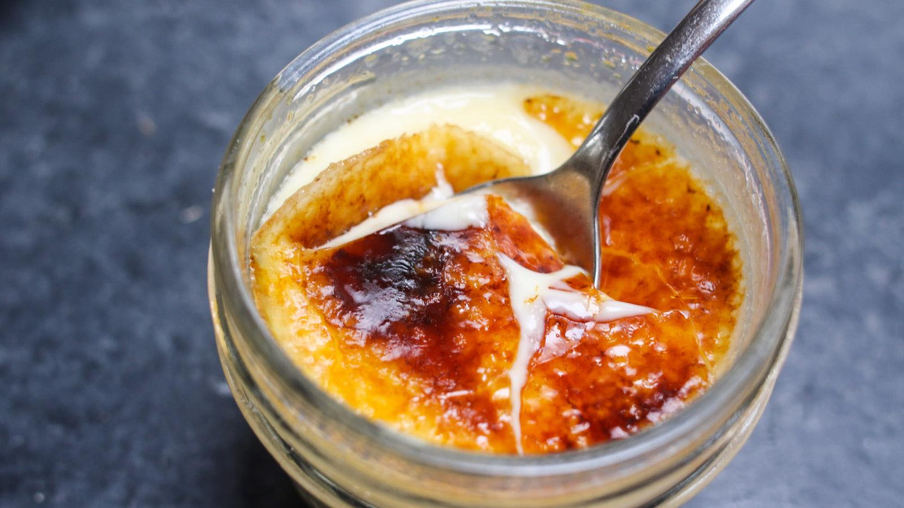

Creme Brulee

Description
Sous Vide Creme Brulee
Ingredients
- 5 Egg Yolks
- 30 grams White Sugar
- 1.5 grams Salt
- 300 grams Heavy Cream
- 4 grams Vanilla Extract
Steps
- To make our Custard base, put all Ingredients into a bowl and whisk well
- Strain the custard base
- Pour into mason jars
- Sous vide at 181°F/82°C for at least one hour
- Chill at room temperature for 15 minutes or untill cooled down
- Chill in the fridge for a couple hours
- Dust sugar on top
- Brulee with torch
- Enjoy!